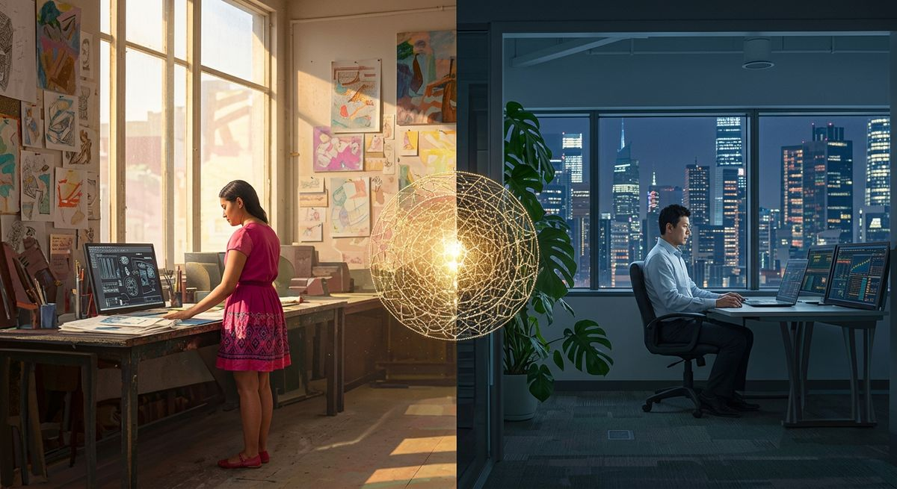

Relazione a distanza: rispetta l'ambiente energetico del partner
Perché le videochiamate continue non bastano a tenere viva una relazione a distanza? La risposta sta nell'ambiente energetico del tuo partner.

Quando la connessione costante diventa il problema
C'è una convinzione diffusa nelle relazioni a distanza: più ci sentiamo, più siamo vicini. Videochiamate la mattina, messaggi durante il giorno, buonanotte con la telecamera accesa. Sembra logico, sembra necessario, sembra la cosa giusta da fare per colmare quei chilometri che separano due persone che si amano.
Eppure, molte coppie a distanza che si sentono ogni giorno arrivano a un punto di saturazione che non sanno spiegare. La stanchezza non viene dalla mancanza, viene dall'eccesso. Dal tentativo di replicare una vicinanza fisica attraverso strumenti digitali che non possono sostituirla. E qui entra in gioco qualcosa che raramente viene considerato: l'ambiente energetico in cui vive il tuo partner.
Lo stile ambientale nel BG5: una meccanica concreta
Nel sistema BG5, ogni persona ha un Environmental Working Style, uno stile ambientale che descrive le condizioni fisiche in cui la sua energia funziona al meglio. Alcune persone prosperano in ambienti selettivi, raccolti, silenziosi, dove possono controllare gli stimoli che ricevono. Altre hanno bisogno di contesti aperti, dinamici, persino rumorosi, dove l'energia circola liberamente e il movimento esterno alimenta quello interno.
Questo dato non riguarda solo il lavoro o la produttività. Riguarda il modo in cui una persona si ricarica, elabora le emozioni, si sente a proprio agio nella propria pelle. E quando il tuo partner vive a centinaia o migliaia di chilometri da te, il suo ambiente diventa il contesto principale della vostra relazione, anche se tu non ci sei fisicamente.
L'invasione gentile
Immagina una persona il cui stile ambientale richiede raccoglimento. Dopo una giornata di lavoro, ha bisogno di silenzio, di uno spazio fisico ordinato e privo di stimoli eccessivi. Il suo modo di tornare a sé stessa passa attraverso quella quiete. Ora immagina che il partner, con le migliori intenzioni, chiami proprio in quel momento. Ogni sera. Con entusiasmo, con affetto genuino, con la voglia di condividere la giornata.
Quella telefonata, per chi la riceve, diventa un'intrusione nel momento esatto in cui avrebbe bisogno di spazio. Il partner che chiama lo fa per amore, ma sta ignorando una meccanica fondamentale: il bisogno dell'altro di abitare il proprio ambiente senza interferenze per potersi ricaricare. Col tempo, la persona che riceve inizia ad associare le chiamate a una sottile fatica, e il senso di colpa si mescola con l'irritazione in un modo che diventa difficile da articolare.
L'opposto è altrettanto vero
Chi ha uno stile ambientale aperto e dinamico soffre se il partner impone una comunicazione troppo strutturata o troppo rara. Ha bisogno di sentire il movimento della relazione, di scambi spontanei che arrivano nel mezzo delle cose, di una presenza leggera ma costante che accompagna il flusso della giornata. Per questa persona, un messaggio vocale improvvisato mentre cammina per strada vale più di una videochiamata programmata alle 21:00 con luci soffuse e silenzio.
La differenza tra questi due scenari non si risolve con un compromesso generico del tipo "sentiamoci un giorno sì e uno no." Si risolve capendo come funziona l'energia dell'altro nel suo spazio fisico, e calibrando la propria presenza di conseguenza.
Dalla quantità alla qualità: un cambio di prospettiva
Quando conosci lo stile ambientale del tuo partner secondo il BG5, smetti di misurare la salute della relazione in minuti di conversazione. Inizi a chiederti domande diverse: a che ora del giorno il mio partner è più ricettivo? In quale momento il suo ambiente lo sostiene anziché drenarlo? Quando una mia chiamata è nutrimento e quando è disturbo?
Queste domande possono sembrare fredde, quasi calcolate, ma in realtà nascono da un rispetto profondo per la meccanica dell'altro. Sono il contrario della trascuratezza: sono attenzione precisa a come l'altra persona funziona davvero, al di là di ciò che dice per educazione o per abitudine.
La distanza come spazio, non come vuoto
Una delle scoperte più sorprendenti nel lavorare con le coppie a distanza attraverso il BG5 è questa: quando entrambi i partner riconoscono e rispettano il proprio stile ambientale e quello dell'altro, la distanza smette di essere un nemico da combattere. Diventa uno spazio funzionale in cui ciascuno può abitare il proprio ambiente corretto, ricaricarsi, e poi incontrare l'altro da un luogo di pienezza anziché di fame.
Il partner che ha bisogno di raccoglimento può vivere le sue sere in silenzio sapendo che l'altro non lo interpreterà come disinteresse. Il partner che ha bisogno di dinamismo può mandare messaggi spontanei senza temere di essere invadente. Ciascuno opera dal proprio spazio corretto, e la relazione si nutre di questa differenza anziché esserne consumata.
Una mappa per navigare la distanza
La Panoramica BG5 del Disegno di Carriera, che è il punto di partenza per qualsiasi lavoro con questo sistema, offre già indicazioni concrete su come una persona elabora le informazioni e in quale assetto opera al meglio. Quando entrambi i partner hanno accesso a questa mappa, le conversazioni sulla gestione della distanza cambiano tono. Si passa dal "perché non mi chiami mai" al "capisco che stasera hai bisogno del tuo spazio, ci sentiamo domani mattina quando sei più aperto."
È un passaggio sottile ma decisivo. Trasforma il conflitto in coordinazione. E la coordinazione, nelle relazioni a distanza, è tutto ciò che tiene insieme due vite separate dalla geografia ma unite dalla scelta di restare.
Domande Frequenti
Cos'è lo stile ambientale nel BG5 e come influenza le relazioni?
Lo stile ambientale nel BG5 descrive il tipo di ambiente fisico in cui una persona opera al meglio: spazi raccolti e silenziosi oppure contesti aperti e stimolanti. Nelle relazioni a distanza, ignorare questa meccanica porta a incomprensioni e stanchezza emotiva.
Perché le videochiamate continue possono danneggiare una relazione a distanza?
La connessione digitale costante genera affaticamento e crea l'illusione di vicinanza senza rispettare i ritmi energetici reali del partner. Se il partner ha bisogno di silenzio e raccoglimento, una videochiamata in più diventa un'invasione anziché un gesto d'amore.
Come posso sapere quale ambiente energetico serve al mio partner?
Attraverso una consulenza BG5, è possibile identificare lo stile ambientale specifico del partner. La Panoramica BG5 del Disegno di Carriera offre già indicazioni fondamentali su come la persona elabora le informazioni e in quale contesto opera al meglio.
Cosa cambia concretamente nel gestire la distanza con il BG5?
Cambia il modo in cui si pianificano le interazioni: frequenza, orari, modalità. Si smette di compensare la distanza con quantità di contatto e si inizia a calibrare la qualità, rispettando i momenti in cui il partner ha bisogno del suo spazio per ricaricarsi.
Vuoi scoprire la tua meccanica?
Se non conosci ancora il tuo Tipo, calcola gratis la tua carta in pochi secondi. Se lo sai già, prenota una Panoramica BG5® e scopri come funziona nel tuo caso specifico.